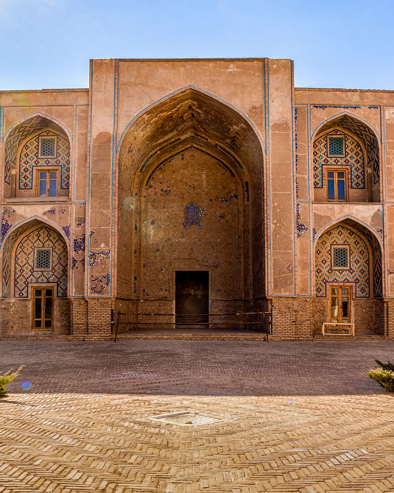
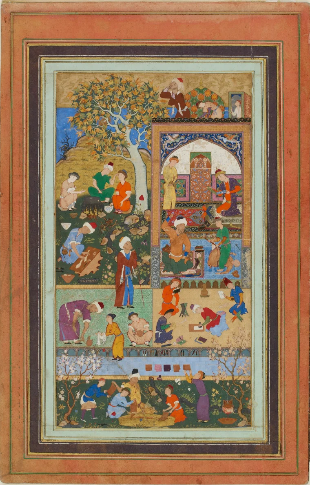
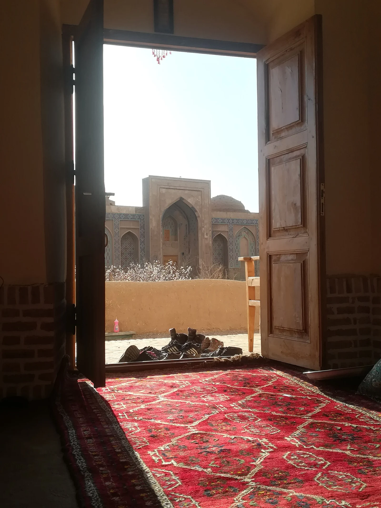
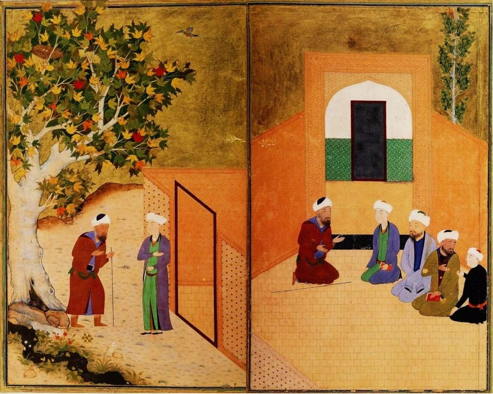
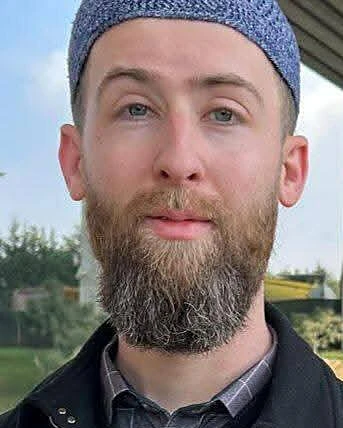
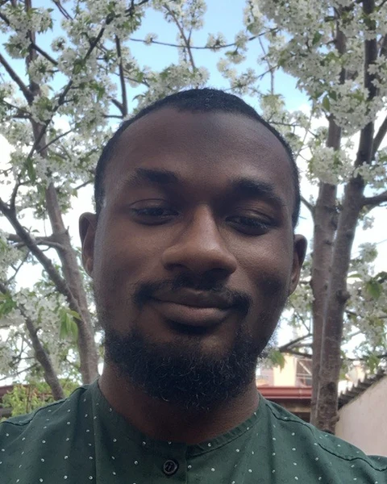
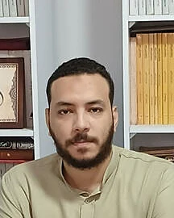

A logical approach to language
Our method rests on a logical analysis of Arabic: a careful examination of vocabulary (), a precise link between each word and its meaning, and comparisons with the languages students already know.
Mubeen takes students by the hand into the classical Islamic sciences, building strong logical thinking through the study of language. It is taught by teachers trained in traditional madrasas, the way the scholars have always taught it.


al-Shu‘arāʾ 26:195 · “in a clear Arabic tongue”
Mubīn means clear, and also making things clear. It is the word the Qur’an uses for the language it was revealed in. That is our aim for every student: Arabic that stops being a wall of unfamiliar script and becomes a clear window onto the Qur’an, the Sunnah, and the books of the scholars.
The Mubeen course was created by a team of teachers deeply rooted in traditional Islamic . All of them were formed the madrasa way, through years of study under scholars in Cairo, Istanbul, Konya and Madinah. The course is led by a holder of in the Islamic sciences, and the rest of the team are on the same path.
They are inspired by our scholarly ancestors, who held that building true intellectual and academic is far more important than memorising scattered pieces of information. A student with malakah can open a new book and read it. That is the goal.

Our method rests on a logical analysis of Arabic: a careful examination of vocabulary (), a precise link between each word and its meaning, and comparisons with the languages students already know.
Language first (the Madinah Books), then reading (Qaṣaṣ al-Nabiyyīn), then ṣarf, then naḥw. Each stage puts the one before it to work.
We revive the traditional role of the . Each week, beyond the two lessons, a teacher sits with the students as mu‘īd to review, practise and question what they learned, building a true .
As students advance, our aim is for them to return as mu‘īds themselves. It is an old principle of the madrasa: to truly master a subject, you must teach it.
Mubeen is not only a language course. It is an entry into the classical methods and scholarly environment of the Islamic intellectual tradition.
Tap any painting to see it in full.
Like the rooms around a madrasa courtyard, each book is a door. Open one to see what your child will be able to do by the end of it.

New topics and concepts are introduced, with exercises until the student reaches a solid understanding.
The week’s material continues and deepens, again worked through with exercises.
The student discusses the week with the mu‘īd, practises further, and questions the concepts critically under guidance.
3 sessions a week × 4 weeks = 12 sessions every month, in every programme.
Two free sessions. Every new student begins with a free lesson and a free muthākarah, so your family can see how Mubeen teaches before paying anything.
Book the free sessions ↗Yes. Every new student gets two free sessions: one core lesson (dars) and one review session (muthākarah). Both take place inside a running class, so your child sees a real lesson. You only pay if you decide to continue.
Students start from age 7. Classes are grouped and paced by level, so younger beginners and teenagers each learn at the right speed.
During the free sessions your child joins a running class. The teacher assesses their level as the lesson goes on, then decides where in the curriculum they should begin.
The path is a guide, not a fixed rule. Depending on the students’ level, and in consultation with parents, a book may sometimes be changed, added or skipped. The durations shown are approximate, and the last three books are paced by the students’ level.
Each session lasts 45 minutes to an hour. Days and times are agreed together between your family and the institute’s administration, so the schedule fits your home and your time zone.
Online, on Zoom or Google Meet. Lessons are interactive: students read, answer, and discuss throughout rather than only listen.
Yes. Every lesson is recorded, so students can rewatch the explanation while reviewing or catch up if they miss a session.
Payment starts only after the free trial sessions, once you decide to enrol. Tuition is paid monthly and covers 12 sessions (two lessons and one muthākarah each week).
Yes. You can cancel at any time before the start of the next month. There is no long-term commitment.
Four of us, one city. All four of us studied in Konya. Three are tied to Madrasah al-Falāḥ and Shaykh Muḥammad Ṣāliḥ al-Ghursī, as his students or as a holder of his .

He has taught Arabic for six years, privately and online for Fawakih Arabic Institute (USA).
After accepting Islam at 16 in Kansas, Bilal earned a Bachelor’s in Education (Curriculum & Teaching) from the University of Kansas, serving as MSA President while studying Arabic and Qur’an locally. During university he completed summer intensives at Fawakih Institute (Virginia) and Qasid Institute (Jordan).
After graduating he spent 18 months in Cairo, graduating from Nile Language Center (Markaz Al-Neel) and studying the Arabic sciences with private scholars. He then studied three years in Istanbul at Fatih Institute under Shaykh Mahmoud Dahla al-Dimashqi, and two years in Konya at Madrasah al-Falāḥ under Shaykh Muḥammad Ṣāliḥ al-Ghursī. He is now continuing his traditional studies in Kurdistan, Iraq, at a branch of Madrasah Beyarah al-Sharifah.

A seeker of knowledge (ṭālib ‘ilm) who has spent over ten years studying the traditional sciences of Islam at madrasas in Morocco, Istanbul, Konya and Madinah.
A keen student of traditional liberal-arts pedagogy, Br. Kevin studied Arabic grammar and morphology at Madrasah al-Falāḥ in Konya while pursuing a master’s in classical education at the University of Dallas as a Braniff Fellow.
He is the founding organiser of Our Islamic Homeschool, a co-founder of Mubeen Arabic, and a homeschooling father of four.

An educator and researcher of the Islamic sciences as preserved in the Ottoman intellectual tradition, specialising in dialectical theology and the Arabic instrumental sciences.
His specialities include morphology, grammar, logic, debate methodology, philosophy of language and the disciplines of rhetoric. He holds a master’s degree in dialectical theology from Necmettin Erbakan University (Konya, Turkey) and an ijāzah ‘ilmiyyah in the Islamic sciences from Shaykh Muḥammad Ṣāliḥ al-Ghursī.
How did Muslim children first learn to read? In this Our Islamic Homeschool community webinar, Sh. Mumin Hussein traces the kuttab, the primary school of early Islam, from the first century AH to a mature and lasting model: who taught, what children learned beyond memorisation, and how the school day ran.
The eight books of the Mubeen path, in the editions we teach from. Open one to read it, or download it for your child.
Free resources from our classes.
| Name | Type | Availability |
|---|---|---|
| The History of Naḥw | Slides | Open in Google Drive ↗ |
Mubeen is the official Arabic studies provider of Our Islamic Homeschool. Fill out the enrolment form to get started, or email the administration with any questions about placement, schedules or family plans.
+20 102 379 7191mubeenadmin@gmail.com